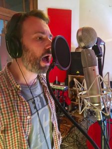

"¡Excelente profesor! Tiene toda la paciencia del mundo y te ayuda
a desarrollar tu propia voz y seguridad. Te acompaña en cada paso,
no querrás perderte una clase, son dinámicas, diferentes y originales.
Aprendizaje garantizado, súper recomendado! La mejor buena vibra." Brian
"Super recomendable!! Juan te gua en lo prctico y lo terico.
El método de enseanza es super ameno, se adapta a todas las voces!!
Desde que arranqué hace casi tres años todo el tiempo aprendo cosas nuevas.
Se disfruta mucho el espacio que te brinda.(Original)
Super recomendable, Juan te orienta en lo practico y lo teorico.
!El metodo de enseñanza es super ameno se adapta a todas las voces!
Desde que empece, hace casi tres años, todo el tiempo aprendo cosas nuevas.
Disfrutas mucho el espacio que te ofrece." Adri Diaz

Llevo más de 14 años enseñando técnica de voz y música en diferentes
estudios privados así como en mi propio estudio en Buenos Aires
antes de mudarme a DC Area. Me especializo en un método de voz que
se llama Método de Voz Funcional, también conocido como Método Rabine
en honor a su creador, el Maestro Eugene Rabine.
Cantando con "Los Hampton", en Buenos Aires, Argentina
En el Estudio "Kingstone Factory", en Buenos Aires, Argentina
Siempre disfruté cantar, me encantaba tocar mi guitarra y cantar.
Al comienzo de mi viaje musical me consideraba un guitarrista que
también puede cantar.
Pero para ser honesto durante esos años no me gustaba mucho mi voz.
No tenía un rango muy amplio, las notas altas siempre me resultaban
difíciles y no creía que el sonido de mi voz fuera realmente bueno.
Normalmente termino cansado y agotado. Solo un par de horas de ensayo
fue suficiente para mí.
Traté de hacer algo de entrenamiento por mi cuenta con un par de
ejercicios que se dice que mejoran la voz pero que nunca parecieron
funcionar bien en mí.
En ese momento comencé a buscar un profesor de canto.
Pasé por diferentes maestros, técnicas y métodos,
y aprendí algunos buenos ejercicios. Sentí que estaba mejorando un poco,
pero nunca estaba completamente satisfecho.
Un par de años después escuché sobre el Método Rabine o Método de
Voz Funcional. Por lo que escuché sonaba lo suficientemente
interesante como para intentarlo. Entonces comencé a leer sobre esto
y busqué un maestro que se especialice en este método.
Esto fue un cambio de juego para mí y mi voz.
A partir de ese momento sentí que mi voz realmente “despegó”.
Me entusiasmé mucho con este método y me encanta ayudar a mis alumnos
a encontrar su voz de cantante.